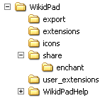

parent nodes: ExternalGraphicalApplications | Hooks | HtmlCss | KeyBindings | Plugins | Scripts | SignalPageNodes | ThisWiki | WikidPadFiles | WikiSyntax
Program Files
Contents:
Back
General
The application files are stored in the WikidPad installation directory of your choice; on windows this would normally be "c:/Program Files/WikidPad/, but you could also install WikidPad on a USB device or in any other location of your choice.

Wikidpad
WikidPad contains the program executables and supporting files. It is also the location of:appbase.css cascading style sheet
and optionally that of
Export
Export is the location for additional files, that support the export function. It is also the location of:appbase level wikistyle.css cascading style sheetappbase level wikipreview.css cascading style sheet
Extensions
Extentions is the location for plugins, that come installed with WikidPad.
Icons
Icons is the location where the icons are stored; both the system icons for menu, toolbar and treeview and the user icons for the treeview.
The icons are 16x16 .GIF images; other sizes and formats are not supported.
Share / Enchant
The subdirectory share / enchant is the location for the language files for SpellChecking
User_extentions
User_extentions is the location to install additional plugins and other user functions.
WikidPadHelp
WikidPadHelp is the location for the WikidPadHelp.wiki
Top
previous: Back
parents: ExternalGraphicalApplications, Hooks, HtmlCss, KeyBindings, Plugins, Scripts, SignalPageNodes, ThisWiki, WikidPadFiles, WikiSyntax
[help.status: done]